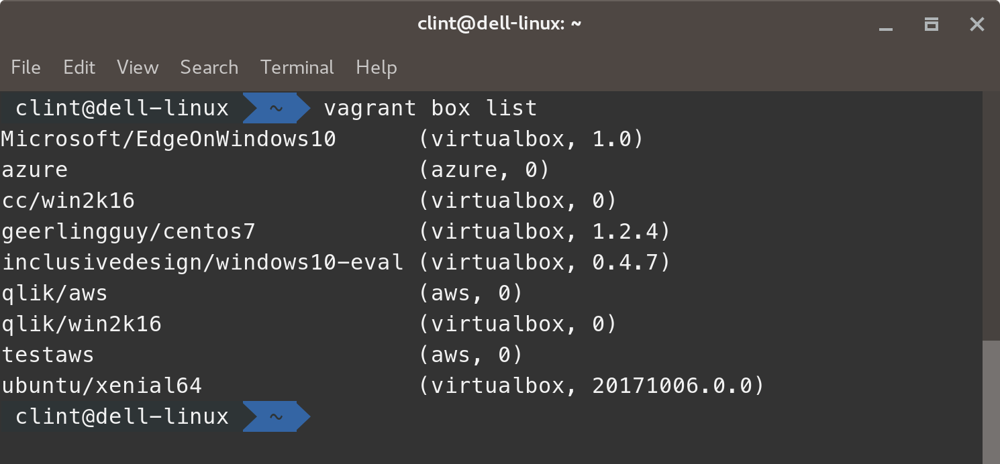
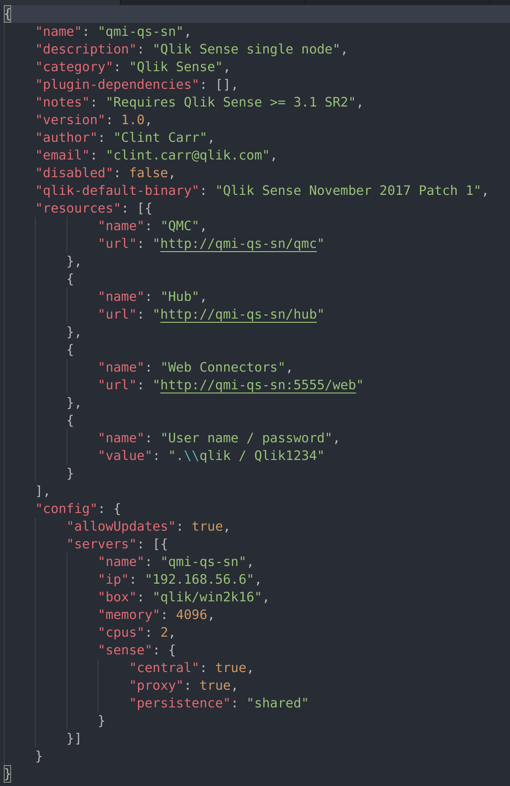
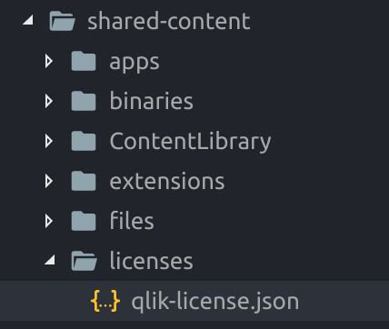

Getting Started
Add the Vagrant box to Vagrant
- Launch your terminal or PowerShell if using Microsoft Windows
- Browse to /qlik-base-os/
- Find the file Win2k16-virtualbox.box this is the output of building the base image from Packer
- Enter vagrant box add --name qlik/win2k16 win2k16-virtualbox.box
- Enter vagrant box list and ensure the qlik/win2k16 box is present 
- This matches the value in the scenario.json file in the scenario folder 
Update the Qlik Licenses
- Launch your text editor
- Open the folder /qmi-scenarios/
- Open the file /shared-content/licenses/qlik-license.json 
- Add the Qlik Licenses (at this stage only sense and qlikview are functional)
{
"sense": {
"name": "ENTER_NAME_HERE",
"control": "ENTER_CONTROL_CODE_HERE",
"serial": "ENTER_SERIAL_CODE_HERE",
"organization": "ENTER_YOUR_ORG_NAME_HERE",
"lef": "QLIKSENSE_LEF_STRING_GOES_HERE"
},
"qap": {
"name": "ENTER_NAME_HERE",
"control": "ENTER_CONTROL_CODE_HERE",
"serial": "ENTER_SERIAL_CODE_HERE",
"organization": "ENTER_YOUR_ORG_NAME_HERE"
},
"qlikview": {
"name": "ENTER_NAME_HERE",
"control": "ENTER_CONTROL_CODE_HERE",
"serial": "ENTER_SERIAL_CODE_HERE",
"organization": "ENTER_YOUR_ORG_NAME_HERE"
},
"datamarket": {
"name": "ENTER_NAME_HERE",
"control" : "ENTER_CONTROL_CODE_HERE",
"serial": "ENTER_SERIAL_CODE_HERE",
"termsAcceptance": {},
"organization": "ENTER_YOUR_ORG_NAME_HERE",
"lef": "DATAMARKET_LEF_STRING_GOES_HERE"
}
}
Qlik Version
The version of Qlik that is installed with the scenario is determined by the default-qlik-binary field in scenario.json. This value updates the /shared-content/binaries/qver.json file.
Qlik Version Updates
The available versions to install are stored within /shared-content/binaries/qBinaryDownload.json. This file needs to have the version and URL in order to download the entered version of Qlik Sense.
{
"qliksense": [
{
"name": "Qlik Sense November 2017 Patch 1",
"url": "https://da3hntz84uekx.cloudfront.net/QlikSense/11.24/1/_MSI/Qlik_Sense_update.exe",
"url2": "https://da3hntz84uekx.cloudfront.net/QlikSense/11.24/0/_MSI/Qlik_Sense_setup.exe"
},
{
"name": "Qlik Sense November 2017",
"url": "https://da3hntz84uekx.cloudfront.net/QlikSense/11.24/0/_MSI/Qlik_Sense_setup.exe"
},
{
"name": "Qlik Sense September 2017 Patch 1",
"url": "https://da3hntz84uekx.cloudfront.net/QlikSense/11.14/1/_MSI/Qlik_Sense_update.exe",
"url2": "https://da3hntz84uekx.cloudfront.net/QlikSense/11.14/0/_MSI/Qlik_Sense_setup.exe"
},
{
"name": "Qlik Sense September 2017",
"url": "https://da3hntz84uekx.cloudfront.net/QlikSense/11.14/0/_MSI/Qlik_Sense_setup.exe"
},
{
"name": "Qlik Sense June 2017 Patch 3",
"url": "https://da3hntz84uekx.cloudfront.net/QlikSense/11.11/3/_MSI/Qlik_Sense_update.exe",
"url2": "https://da3hntz84uekx.cloudfront.net/QlikSense/11.11/0/_MSI/Qlik_Sense_setup.exe"
},
{
"name": "Qlik Sense June 2017 Patch 2",
"url": "https://da3hntz84uekx.cloudfront.net/QlikSense/11.11/2/_MSI/Qlik_Sense_update.exe",
"url2": "https://da3hntz84uekx.cloudfront.net/QlikSense/11.11/0/_MSI/Qlik_Sense_setup.exe"
},
{
"name": "Qlik Sense June 2017 Patch 1",
"url": "https://da3hntz84uekx.cloudfront.net/QlikSense/11.11/1/_MSI/Qlik_Sense_update.exe",
"url2": "https://da3hntz84uekx.cloudfront.net/QlikSense/11.11/0/_MSI/Qlik_Sense_setup.exe"
},
{
"name": "Qlik Sense June 2017",
"url": "https://da3hntz84uekx.cloudfront.net/QlikSense/11.11/0/_MSI/Qlik_Sense_setup.exe"
},
{
"name": "Qlik Sense 3.2 SR5",
"url": "https://da3hntz84uekx.cloudfront.net/QlikSense/3.2.5/205/_MSI/Qlik_Sense_setup.exe"
},
{
"name": "Qlik Sense 3.2 SR4",
"url": "https://da3hntz84uekx.cloudfront.net/QlikSense/3.2.4/204/_MSI/Qlik_Sense_setup.exe"
},
{
"name": "Qlik Sense 3.2 SR3",
"url": "https://da3hntz84uekx.cloudfront.net/QlikSense/3.2.3/203/_MSI/Qlik_Sense_setup.exe"
},
{
"name": "Qlik Sense 3.2 SR2",
"url": "https://da3hntz84uekx.cloudfront.net/QlikSense/3.2.2/202/_MSI/Qlik_Sense_setup.exe"
},
{
"name": "Qlik Sense February 2018 pre-release",
"preview": true,
"url": "https://qmi.qlik.com/downloads/installers/Qlik_Sense_setup.exe"
}
],
"qlikview": [
{
"name": "QlikView Server November 2017",
"url": "https://da3hntz84uekx.cloudfront.net/qlikview/12.20/122020100/_MSI/QlikViewServer_x64Setup.exe"
},
{
"name": "QlikView Server 12.10 SR8",
"url": "https://da3hntz84uekx.cloudfront.net/qlikview/12.10/121020600/_MSI/QlikViewServer_x64Setup.exe"
},
{
"name": "QlikView Server 12.10 SR7",
"url": "https://da3hntz84uekx.cloudfront.net/qlikview/12.10/121020500/_MSI/QlikViewServer_x64Setup.exe"
},
{
"name": "QlikView Server 11.20 SR17",
"url": "https://da3hntz84uekx.cloudfront.net/qlikview/11.20/13607/_MSI/QlikViewServer_Win2012andUp.exe"
}
]
}